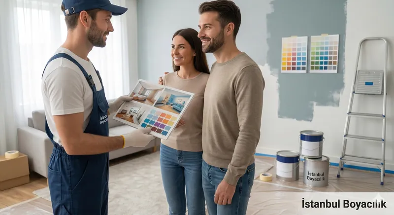
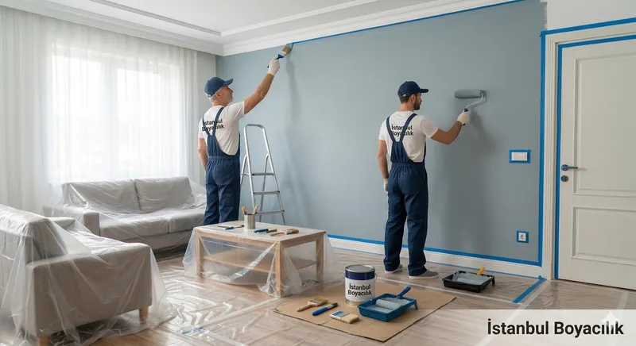
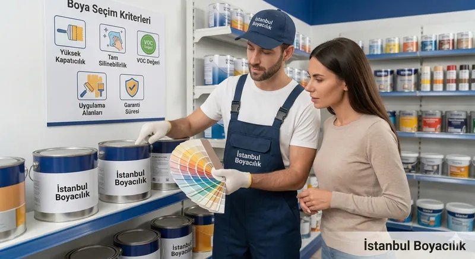
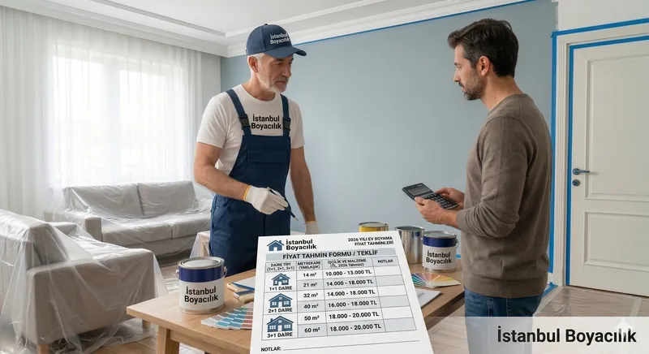
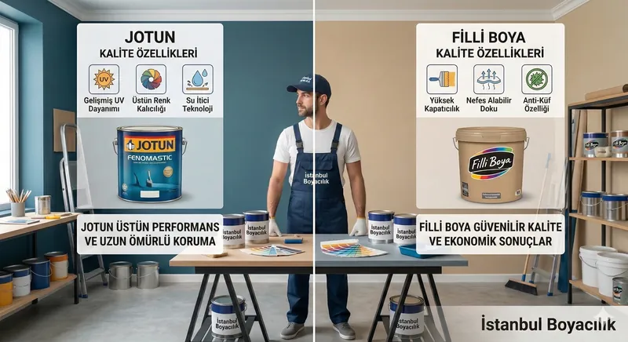
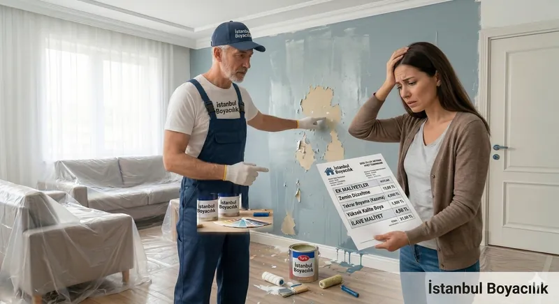
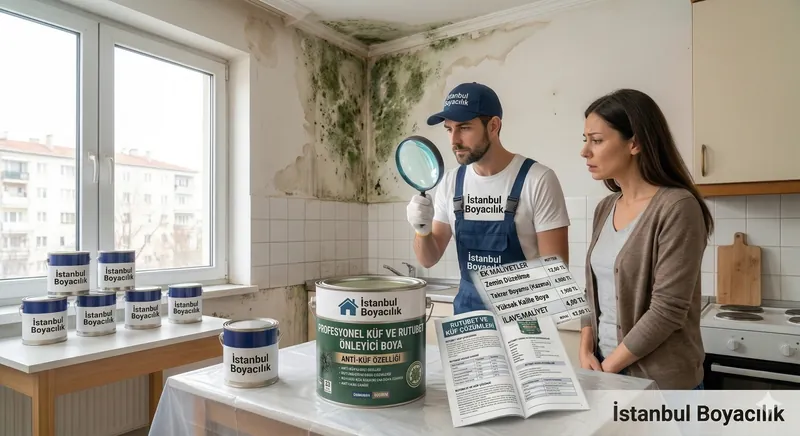
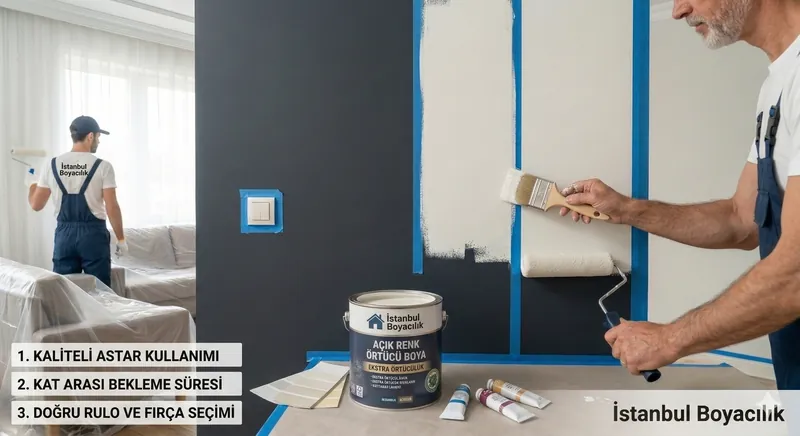
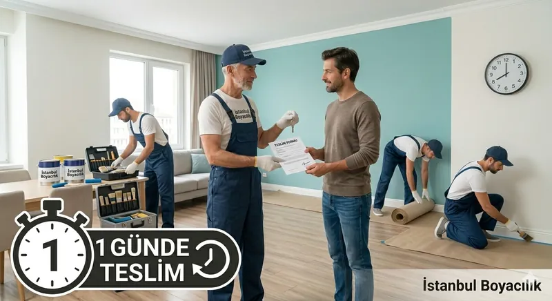

Rehber
Boyacı Ustası Nasıl Seçilir?
Güvenilir usta seçmenin püf noktaları, referans kontrolü ve dikkat etmeniz gereken kritik detaylar.
Boya badana hakkında merak ettiğiniz her şey: Usta seçimi, güncel fiyatlar, marka karşılaştırmaları ve pratik ipuçları.
Doğru kararlar vermenize yardımcı olacak kapsamlı rehberler

Güvenilir usta seçmenin püf noktaları, referans kontrolü ve dikkat etmeniz gereken kritik detaylar.

Metrekare hesabı, silinebilir boya özellikleri ve kapatıcılık oranı hakkında bilmeniz gerekenler.

Süreç yönetimi, prizlerin sökülmesi, bantlama teknikleri ve profesyonel boyama tavsiyeleri.

Hışır örtü kullanımı, zemin koruma brandaları ve eşyalarınızı boyadan korumanın pratik yolları.
Bütçenizi doğru planlayın, sürpriz maliyetlerden kaçının

Güncel işçilik ve malzeme maliyetleri üzerine detaylı analiz. Oda sayısına göre bütçe hesaplama.

İki dev markanın kapatıcılık, dayanıklılık ve fiyat performansını detaylı olarak kıyaslıyoruz.

Kalitesiz işçiliğin sonradan çıkaracağı masraflar ve dikkat etmeniz gereken kırmızı bayraklar.
Özel durumlarda profesyonel çözümler ve teknik bilgiler

Yalıtım ve antibakteriyel boya çözümleri ile rutubetten kaynaklanan sorunların kalıcı çözümü.

Astar kullanımı ve katman atma teknikleri ile koyu duvarlardan kurtulmanın adım adım yolu.

Jet boyacı konseptinin detayları, ekip çalışması ve hızlı teslim sürecinin perde arkası.